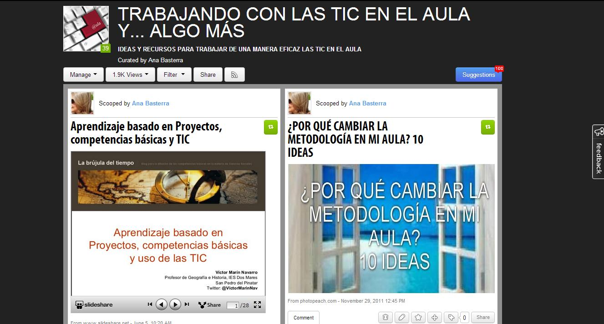

Recopilamos y publicamos nuestro trabajo
A lo largo de este gran proyecto, que ha tenido como eje central las guerras y conflictos de la humanidad en momentos históricos diferentes, hemos llevado a cabo muchas actividades y elaborado distintos trabajos.
Llega ahora el momento de recopilar todos esos trabajos para publicarlos y ponerlos a disposición de nuestros compañeros. En esta tarea final, vamos a colgar nuestras producciones en Internet, utilizando la aplicación Scoop.it.
Tarea: Crear un mural virtual
El producto final será la creación de un mural virtual con Scoop.it en el que insertemos todos los trabajos que hemos realizado en este proyecto.
Este mural nos puede servir de soporte, para poder explicar a alumnos y alumnas de otros niveles el trabajo que hemos realizado. Si, además, nuestro centro dispone de una página Web, un blog u otro soporte digital, podemos pedir a la dirección del centro que haga difusión de esta recopilación de materiales, para que pueda ser visto por nuestros padres, hermanos, amigos, y demás usuarios de la Red.

Scoop it de Ana Basterra:"Trabajando con las Tic en el aula, y algo más"
Antes de empezar, tendremos que conocer la aplicación y su funcionamiento. Después, solo tendremos que seguir los pasos del tutorial que aparece en los recursos para crear nuestro primer mural vitual con Scoop.it
Los pasos para esta tarea son los siguientes:
- Crear una cuenta personal en Scoop.it
- Crear un canal, al que llamaremos "La guerra una y otra vez" para incluir todos nuestros trabajos.
- Incluir los materiales que hemos elaborado en este proyecto. Cada uno aparecerá en una entrada distinta.
- Dar la información de cada entrada, creando dos o tres etiquetas acerca de la misma.
- Sugerir nuestros contenidos a los muros creados por otros compañeros.
Al terminar nuestro mural virtual, lo presentaremos en una entrada de nuestro blog. En ella explicaremos el contenido del mural, los recursos que hemos utilizado para crearlo y añadiremos los enlaces a los murales de algunos compañeros.
Recursos en la Red
¿Qué debemos conseguir?
En este apartado encontraremos la información necesaria para obtener una buena nota con nuestro trabajo.
La rúbrica para la evaluación de la tarea especifica unos indicadores que resumen qué va a evaluar el profesor. Por otra parte, aparecen unos niveles de logro de cada indicador (Sobresaliente, Notable, Aprobado, Insuficiente) en los que se recoge cómo será puntuado nuestro proyecto en cada uno de los apartados que se evalúan.
Resulta muy práctico que lo tengamos en cuenta, ya que especifica qué debemos conseguir exactamente con nuestro trabajo. ¡Pondremos nuestros ojos en la columna "Sobresaliente" y a por todas!
Diario de aprendizaje
Después de finalizada la tarea, es el momento de escribir en el diario de aprendizaje.
Podemos responder a estos ítems:
- No me ha costado hacer...
- He tenido dificultades en...
- No he terminado la tarea porque...
- Doy por terminada la tarea (fecha)
Además, podemos hacer una reflexión final sobre lo que hemos aprendido a lo largo del proceso. Dedicaremos la mitad de una sesión en clase (25 minutos) a compartir las conclusiones a las que hemos llegado con nuestra investigación a lo largo del proyecto. Nos gustaría que reflexionases a fondo sobre las cuestiones que aparecen a continuación.
Reflexión final
Después de haber acabado nuestro proyecto, solo nos queda una tarea más por llevar a cabo: evaluar todo lo que hemos hecho. Se trata de que pensemos en qué hemos aprendido y en cómo lo hemos aprendido, es decir, en las tareas y actividades que hemos ido realizando a lo largo de este proyecto.
Esta reflexión y evaluación del proceso de enseñanza y aprendizaje, nos ayudará a nosotros a tomar conciencia del camino que hemos recorrido, y al profesor a corregir aquellos aspectos que han funcionado mal, y a mantener las propuestas que nos han permitido aprender más y mejor.
Para realizar la evaluación, tenemos que completar estos dos documentos que aparecen a continuación.
Podemos hacerlo de forma anónima, primero manera individual y, después, ponerlo en común entre los grupos que hemos trabajado juntos y, después, en gran grupo. Incluso podemos publicar los resultados. También sería muy buena idea que compartiéramos nuestras reflexiones con nuestros padres.
Obra publicada con Licencia Creative Commons Reconocimiento Compartir igual 4.0